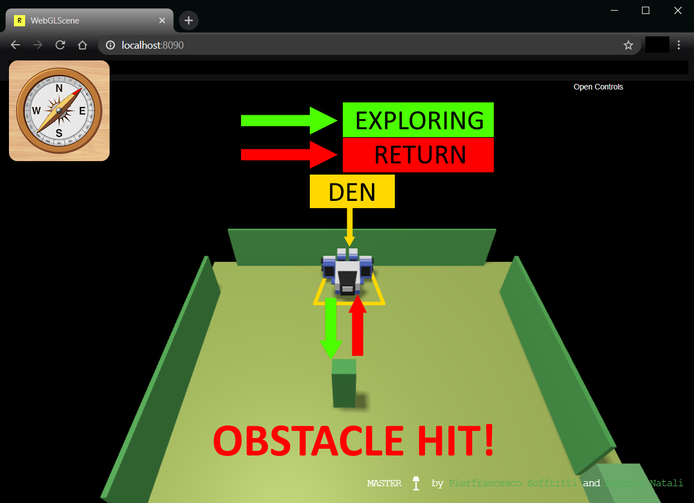
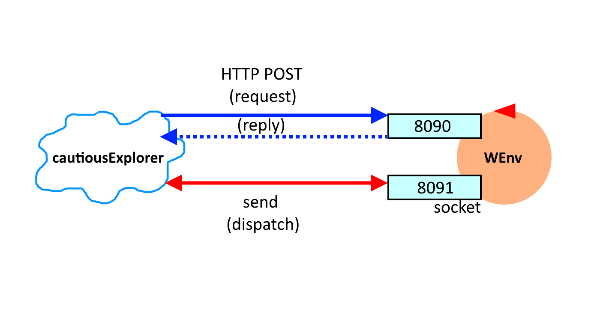
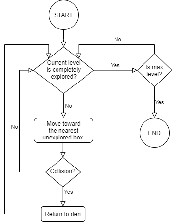
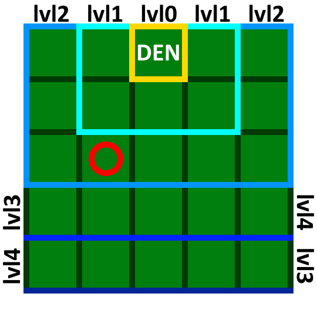
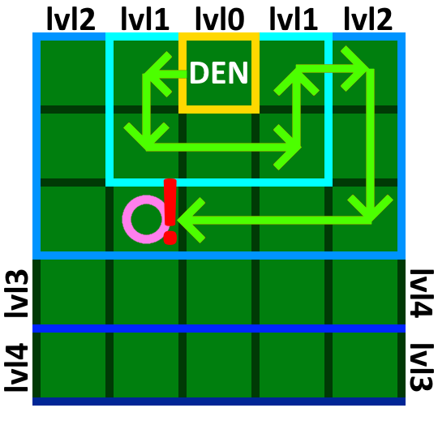
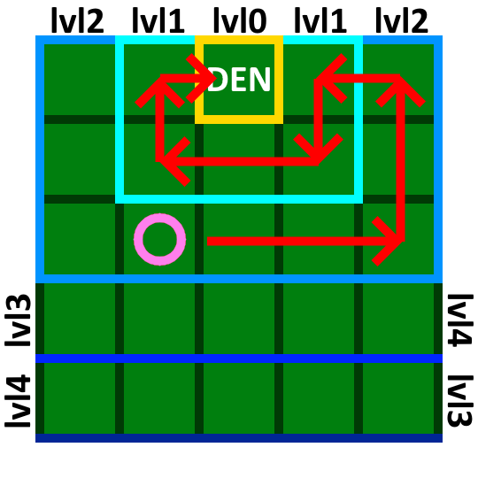
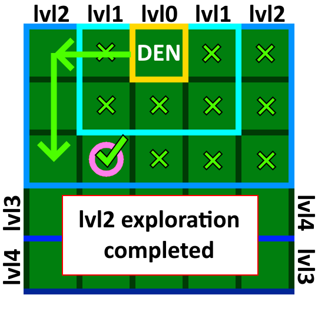

Introduction
This case-study starts to deal with the design and development of
proactive/reactive software systems that use aynchronous exchange of
information.
Requirements
Design and build a software system that allow the robot described in
VirtualRobot2021.html
to exibit the following behaviour:
- the robot lives in a closed environment, delimited by walls that includes one or more devices (e.g. sonar) able to detect its presence;
- the robot has a
den for refuge, located near a wall; - the robot works as an explorer of the environment. Starting from its
den , the robot moves (either randomly or - preferably - in a more organized way) with the aim to find the fixed obstacles around theden . The presence of mobile obstacles is (at the moment) excluded; - since the robot is 'cautious', it returns immediately to the
den as soon as it finds an obstacle. Optionally, it should also return to theden when a sonar detects its presence; - the robot should remember the position of the obstacles found, by creating a sort of 'mental map' of the environment.
Delivery
The customer requires to receive the completion of the analysis (of the requirments and of the problem) byThe name of the file (in pdf) should be:
cognome_nome_ce.pdf
Requirement analysis
The client requires the software system "cautiousExplorer". The interview has outlined the
following meanings for the initial requirements:
robot - a device that can move forward, backward and rotate, detecting when it collides with obstacles. To execute the movements the robot receives commands through the network, as described in VirtualRobot2021.closed environment - the space within which the robot exists and can move. This space has unknow dimensions and is delimited by walls, with which the robot collides. Moreover, it contains an unknown number of obstacles, with which the robot collides.den - the starting position of the robot. This is the space from which the robot begins to move to explore the environment and to which the robot returns whenever it encounters an obstacle. This place must be editable only before the execution and has to be located near a wall.organized way - means that the robot doesn't move in a random way, but it follows a pattern, so that it doesn't collide with the same obstacle more than once.obstacles - fixed objects within the environment, that prevent the robot from passing through them. Walls are obstacles too and the robot cannot tell the difference between the two.cautious - the robot is 'cautios' because as soon as it collides with an obstacle, which could involve a dangerous situations, it returns immediately to its den. It does not make further actions before doing so.mental map - something the robot needs to remember the area it has explored (in particular the position of the obstacles), so it does not collide with the same obstacles and chooses a new path. The map can also be useful to recognize the best path if there are more than once.Optionally - it means that the referred feature (the sonar detection) can be enabled and disabled at will.sonar - a device located inside the environment or along its boundary, which can detect the robot within a certain range of action. The system can collect data from the software as described in VirtualRobot2021.
lives - the robot exists, can move and perform all its exploring actions (the robot does all of this inside the closed environment, it cannot leave or get out of its perimeter).detect - know that the robot has passed through the range of action of the device (e.g. sonar).
Main user story
| As a user I set the robot to start from the The system collects informations about the robot actions, which are sent back to the system. Then the system uses them to decide where to move the robot next. If the robot hits an obstacle, it immediately returns back to the den. While the robot moves, the system incrementally updates the mental map by adding the position of the obstacle found. When the system executions ends, I expect that the robot has successfully explored the whole environment. |
 |
Second user story (with presence detection option enabled)
| As a user I set the robot to start from the The system execution is the same of the main user story but, in this case, the robot returns immediately to the den even if a device (e.g. a sonar) detects its presence. If that happens, the system still updates the mental map, as the range of action of the sonar is perceived as "dangerous", so it is an obstacle too. | .png) 1) exploring phase 1) exploring phase |
.png) 2) return phase 2) return phase |
Informal first set of functional test plans
The TestPlan must verify that the robot, after a collision with an obstacle (or after the
detection of its presence by a device, in case of the second user story), returns to the den,
as shown in the figure of the main user story. Moreover, after this, it must check that the robot actually
choose a different path so it doesn't hit the same obstacle again. This way the robot can
effectively explore the whole environment.
In other words, the TestPlan purpose is to check that the map the system generates is the one that we would expect, by knowing the position of the obstacles (and the detection devices).
In other words, the TestPlan purpose is to check that the map the system generates is the one that we would expect, by knowing the position of the obstacles (and the detection devices).
Problem analysis
Relevant aspects
As stated in VirtualRobot2021,
the robot can communicate with the system in two different ways:
Given that the system, if the option is enabled, could receive information from a device independent from the robot (e.g. sonar), the communication based on HTTP POST is not appropriate, since the HTTP protocol is based on a request/response model. As a matter of fact, the detection device can send data without a request. As a consequence, to use HTTP we would need to make a polling algorithm, which generates overhead.
Therefore, the best solution is to use the communication based on websocket.
To make the system more modular and flexible, the designer could make reference to proper design principle and pattern, in particular:Single Responsibility Principle
on the whole system, Strategy Pattern
to implement the exploring algorithm and Observer Pattern
to implement the asynchronous notify of the presence detection mechanism.
HTTP POST - the system sends a POST request message on the port 8090 and receive a response from the robot.websocket - the system sends asynchronous message through the socket associated with the port 8091, and the robot responds sending back informations.
Given that the system, if the option is enabled, could receive information from a device independent from the robot (e.g. sonar), the communication based on HTTP POST is not appropriate, since the HTTP protocol is based on a request/response model. As a matter of fact, the detection device can send data without a request. As a consequence, to use HTTP we would need to make a polling algorithm, which generates overhead.
Therefore, the best solution is to use the communication based on websocket.
To make the system more modular and flexible, the designer could make reference to proper design principle and pattern, in particular:
Main problems
Explore algorithm - This is the main problem we have to solve to meet the requirements. Since the system incrementally builds the mental map, the best solution is to take advantage of this and move the robot according to the type of box near it. Basically we will have 3 types of box: "explored free", "explored obstacle", "not explored". Given that we set the following rules: the robot won't go toward the boxes marked as "explred obstacle"; if the robot is near a "not explored" box and a "explored free" box, it will prefer the not explored one, since it represent a new exploring path.Map representation - One of the main problems is the representation of the mental map. The best way to build it is to use an approximated grid to divide the environment. Each box must be the same size as the robot, that represent arobot unit . If the robot hits an obstacle, the box that contains it is marked entirely as an obstacle.Robot language - with a map divided as described before, now the robot needs to know a specific communication language. In particular, its movements will be based on the robot unit (with fixed durations to match the robot length). To acheive that, we can reuse thearil language and the support implemented in boundaryWalk.Map building - the map will be build incrementally using an algorithm or component given by the software house.Return to den - when the robot hits an obstacle (or is detected by a device), it returns to the den. To do this, it follows the same path it has traveled since he moved out from the den, because it definitely has no obstacles along the way. Before returning back, the robot turns itself, then retraces the path in reverse, as it is "running away from the danger" (which are the obstacles and detection devices).
Logical architecture
Legend: |
|
The system we must design has two software macro-components:
|
 |
Test plans
The test purpose is to check that:
forward, left, forward, forward.
then the returning sequence must be:
left, left, forward, forward, right, forward.
The first 2 "left" means that the robot rotates of 180 degrees.
To get this we must:
Given our exploring algorithm, we set the test so the robot start from a den that is near an obstacle. Then we make the robot go straight forward to hit the obstacle and make it return to the den. After this we activate the exploring algorithm, to check if the new path is different and we compare the move sequences. In JUnit pseudocode:
- the robot returns to the den using the same path but done in reverse (not backwards).
- the mental map built is the one we would expect.
- after returning to the den the robot chooses a new path.
1. Returning path
If the exploring path uses the following sequence of commands:forward, left, forward, forward.
then the returning sequence must be:
left, left, forward, forward, right, forward.
The first 2 "left" means that the robot rotates of 180 degrees.
To get this we must:
- create a new empty command sequence.
- add 2 rotation in the same direction (e.g. left) at the beginning.
- add the exploring sequence in reverse (from the end to the beginning).
- invert the rotation from left to right and from right to left.
private robot;
private expectedReturnSequence;
@Before
public void init()
{
this.robot.create();
this.robot.setDen();
this.expectedReturnSequence = "forward, forward, right, forward";
}
@Test
public void checkReturnSequence()
{
this.robot.sendCmd(forward);
this.robot.sendCmd(left);
this.robot.sendCmd(forward);
this.robot.sendCmd(forward);
// obstacle hit (the robot reactively returns to the den)
assertTrue(compareSequence(this.robot.getLastSequence(), this.expectedReturnSequence));
}
2. Mental map
We must check that the obstacles in the generated mental map are in the same position as the ones we know they are. To do this we move the robot with a predefined sequence of commands, to collide with an obstacle, then compare the generated map with the one with obstacles in the right position. In JUnit pseudocode:
private robot;
private expectedMentalMap;
@Before
public void init()
{
this.robot.create();
this.robot.setDen();
this.expectedMentalMap = "..."; // obstacle in the right position
}
@Test
public void checkMentalMap()
{
this.robot.sendCmd(forward);
this.robot.sendCmd(left);
this.robot.sendCmd(forward);
this.robot.sendCmd(forward);
// obstacle hit (the robot reactively returns to the den)
assertTrue(compareMapObstacles(this.robot.getMap(), this.expectedMentalMap));
}
3. Different exploring path
We must check that the robot, after it return to den, will choose a path that is different from the one that took it to hitting the obstacle. Otherwise, the robot will get into a loop without exploring any other areas.Given our exploring algorithm, we set the test so the robot start from a den that is near an obstacle. Then we make the robot go straight forward to hit the obstacle and make it return to the den. After this we activate the exploring algorithm, to check if the new path is different and we compare the move sequences. In JUnit pseudocode:
private robot;
private sequence;
@Before
public void init()
{
this.robot.create();
this.robot.setDen();
this.sequence = "forward, forward";
}
@Test
public void checkExploringAlgorithm()
{
while( true )
{
this.robot.sendCmd(forward);
if(this.robot.collision) // obstacle hit
{
this.sequence = this.robot.getLastSequence(); // sequence from den
}
}
// the robot returns to the den
this.robot.explore(); // exploring algorithm activated
wait();
// compares the sequence from last return to den with the new sequence
assertTrue(!compareMapObstacles(this.robot.getLastSequence(), this.sequence));
}
Project
Nature of the applicationSince the system uses the asynchronous communication, implemented through the pattern observer, there will be at least 2 threads: the first is the main thread, which task is to run the execution flow. The second one is the one that handles the asynchronous messages of the detection mechanism. |
 TODO |
Project architecture |
 TODO |
Exploring algorithmThe exploration algorithm can be summarized through the flow chart shown on the right: the exploration goes on "in waves" (or rings) of different levels, starting from the den which is 0, increasing by one for each level around it.The exploring algorithm will be injected into the system through the pattern strategy. This way if the application will evolve or change in the future, there will be the possibility to substitute the algorithm with another one more suitable to new requirements. |
 |
Execution example:
| (1) | (2) | (3) | (4) |